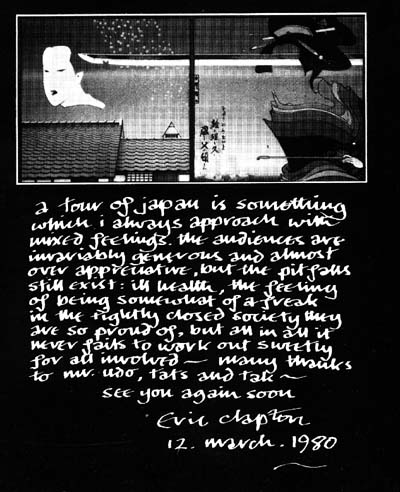

 |
к туру по японии я всегда отношусь со смешанными чувствами. публика здесь щедра и почти слишком благожелательна, но есть и подводные камни: слабое здоровье; ощущение, что ты урод (чужак) в этом плотно закрытом обществе, которым они так гордятся - но, в общем и целом, никогда еще все не кончалось иначе, как очень мило для всех, кто был вовлечен. -- премного благодарностей мистерам удо, тэтсу и тэку.-- |